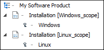

Working with DITA 1.3 Key Scopes
DITA 1.3 includes the possibility of using a concept called Key Scopes (or scoped keys). It allows you to reuse a topic in multiple places within the same DITA map, but with slightly different content in each instance.
Key Scopes Use-Case
Suppose that you develop a software product and you have a topic in your user guide that explains how to install your product on a Windows operating system. Suppose that the steps are exactly the same for installing it on Linux and the only difference is the name of the operating system. Therefore, it would be helpful if you could reuse the exact same content in two different topics, but with the name of the operating system different in each instance. In DITA 1.2, this is not possible since keys can only be resolved to a single value. However, with the DITA 1.3 Key Scopes mechanism, you can define multiple values for the same key depending on the context.
How to Use Key Scopes in Oxygen XML Editor
- Define the keys to be used in multiple places within your DITA map.
- For each particular topic that contains the keys, define the key scopes:
- Right-click the topic in the DITA Maps Manager and select
 Edit properties.
Edit properties. - In the Keys tab, enter a value (or multiple values) in the Key scopes field.
- Click OK to save your changes.
- Right-click the topic in the DITA Maps Manager and select
-
Save the DITA map.
Result: In the DITA Maps Manager, you can now see the key scopes in brackets and when you open each topic reference.
Figure 1. Key Scopes in DITA Maps Manager The content will also be expanded in Author mode according to the context of the key scope you defined for that particular topic. Also, when you transform the DITA map, the scoped keys will be reflected in the published content.
Resources
- You can find a more detailed example and download samples for reuse possibilities based on key scopes in the DITA 1.3 Key Scopes - Next Generation of Reuse blog post.
- You can also watch our DITA 1.3 video tutorial to see how key scopes can be used in Oxygen XML Editor.